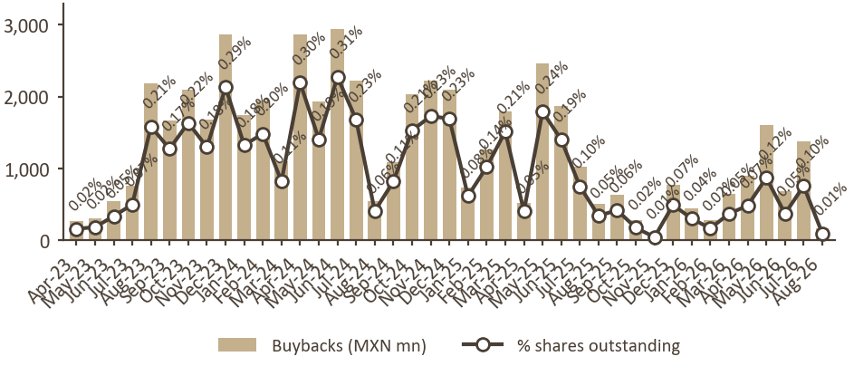

Week to 03-Aug-2026
AMX bought back MXN 173 mn · 8.0 mn shares · average MXN 21.61

AMX Buybacks - 2026 YTD (through 03-Aug-2026)
| Month | Buybacks (MXN mn) | Buybacks (# shares, mn) | Avg. Price (MXN) | % Shares Out |
|---|
| Jan-26 | 447 | 24.6 | 18.16 | 0.04% |
| Feb-26 | 283 | 13.7 | 20.72 | 0.02% |
| Mar-26 | 650 | 30.2 | 21.49 | 0.05% |
| Apr-26 | 899 | 39.5 | 22.75 | 0.07% |
| May-26 | 1,608 | 70.8 | 22.69 | 0.12% |
| Jun-26 | 682 | 30.1 | 22.63 | 0.05% |
| Jul-26 | 1,382 | 61.5 | 22.47 | 0.10% |
| Aug-26 | 173 | 8.0 | 21.61 | 0.01% |
| TOTAL | 6,123 | 278.5 | 21.99 | 0.46% |
5 routine notices
- programme addition 2023-04-14 MXN 1,586,249,981 unconfirmed - confirm against the AGM/board resolution authorising the buyback programme top-up (BMV 'Eventos Relevantes' or 'Asambleas' for AMX, or the AMX annual report); the recompras PDF never states the programme size. Then set confirmed_by_owner: true.
- programme addition 2024-04-29 MXN 15,000,000,066 unconfirmed - confirm against the AGM/board resolution authorising the buyback programme top-up (BMV 'Eventos Relevantes' or 'Asambleas' for AMX, or the AMX annual report); the recompras PDF never states the programme size. Then set confirmed_by_owner: true.
- programme addition 2024-11-08 MXN 15,000,000,033 unconfirmed - confirm against the AGM/board resolution authorising the buyback programme top-up (BMV 'Eventos Relevantes' or 'Asambleas' for AMX, or the AMX annual report); the recompras PDF never states the programme size. Then set confirmed_by_owner: true.
- programme addition 2025-05-14 MXN 10,000,000,012 unconfirmed - confirm against the AGM/board resolution authorising the buyback programme top-up (BMV 'Eventos Relevantes' or 'Asambleas' for AMX, or the AMX annual report); the recompras PDF never states the programme size. Then set confirmed_by_owner: true.
- programme addition 2026-04-23 MXN 10,000,000,000 unconfirmed - confirm against the AGM resolution approving the 2026 programme top-up - look in BMV 'Eventos Relevantes' / 'Asambleas' for AMX around Apr-2026, or the AMX annual report. The recompras PDF never states the programme size. Then set confirmed_by_owner: true.
Generated from the BMV "Adquisición de Acciones por Emisora (Recompras)" PDFs. Figures are derived from the two "al presente" fields of each report; the workbook and chart are attached.